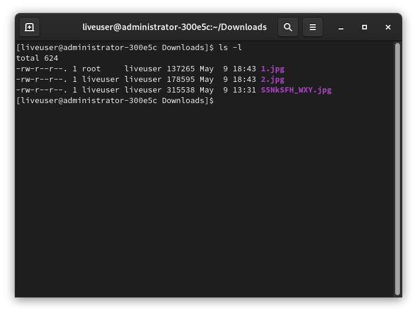
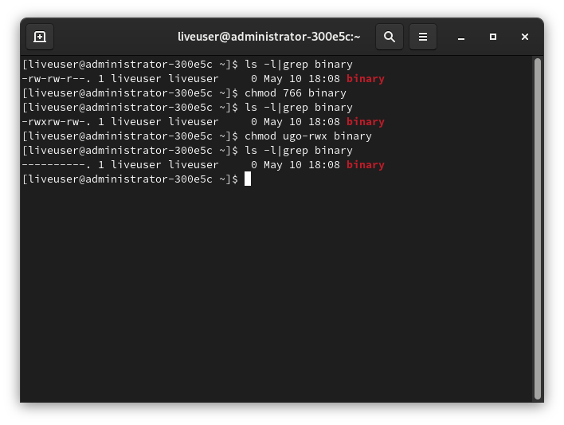

Строение Linux - часть 3. Права доступа.
Во второй части речь была про концепцию "всё есть файл" и типы файлов, поэтому в этой части статьи будет рассказано про права доступа к файлам.
История
В отличии от DOS и подобных систем, Unix проектировался как многопользовательская ОС. Поэтому в Unix должна быть хорошая система управления доступа к файлам. А Linux - Unix-подобное ядро, поэтому и управление доступом было взято именно из Unix.
Теория
Чтобы получить доступ к определённому файлу в Linux, используются разрешения, которые назначаются трём объектам: файлу, группе и другому объекту (т.е. всем остальным). Но перед этим нужно знать про владельца файла (директории не упоминаются специально, так как это тоже файл - концепция "Всё есть файл" в UNIX-подобных/образных).
В Linux у каждого файла есть два владельца: пользователь и группа. Они устанавливаются при создании файла. Каждый файл имеет три категории пользователей, для которых можно устанавливать различные сочетания прав доступа:
* Владелец - набор прав для владельца файла - пользователя, который создал его или сейчас установлен его владельцем. Обычно владелец имеет все права: чтение, запись и исполнение
* Группа - любая группа пользователей, существующая в ОС и привязанная к файлу
* Остальные - все пользователи (кроме владельца и юзеров, входящих в группу файла)
Только пользователь root (он же суперпользователь) может работать со всеми файлами независимо от набора их полномочий.
Пользователь, создавший файл, становится его владельцем, так же как и первичная группа, в которую он входит. Чтобы определить, есть ли у вас, как у пользователя, права доступа к файлу, оболочка проверяет владение им. Принцип работы таков:
* Оболочка проверяет, являетесь ли вы владельцем файла, к которому запрашивается доступ. Если владельцем являетесь, то оболочка прекращает проверку и вы получаете разрешения. Если вы не являетесь владельцем, но входите в группу, у которой есть доступ к файлу, то вы получаете доступ к файлу с теми же разрешениями, что и у той группы.
* Если же вы не являетесь ни пользователем, ни владельцем группы, то вы получаете права других пользователей (other).
Каждый пользователь может получить полный доступ к файлу в том случае, если доступ ему разрешён. Либо же, если он является владельцем файла.
Чтобы увидеть пользователя и группу-владельца файла, выполните:
ls -l
Чтобы просмотреть тоже самое, но для конкретного файла:
ls -l 'FILE'
FILE замените на нужный файл.

Изменение владельца файла
Иногда нужно изменить владельца файла. Например, я это часто делал при компиляции LFS. Особенно при выполнении некоторых тестов сборки пакетов, которые выполнять от имени root опасно, а от имени менее привилегированного пользователя очень даже кстати.
Для смены владельца используется chown - change owner. Синтаксис этой команды очень прост:
chown пользователь опции /путь/к/файлу
Ключи и опции chown
-c--changes- подробный вывод всех выполняемых операций-v--verbose- описание действий и вывод подробных данных о каждом обработанном файле-R--recursive- рекурсивная обработка всех подкаталогов-f--silent--quiet- минимум информации, выводимой на экран, даже сообщения об ошибках--dereference- изменять права для файла, к которому ведёт символическая ссылка вместо самой ссылки (по умолчанию)--no-dereference-h- изменять права симлинков, но оставить неизменными файлы, на которые указывают эти симлинки-L- переходить по всем симлинкам на каталоги-H- если передан симлинк на каталог, перейти по нему-P- не переходить по символическим ссылкам на каталоги (по умолчанию)
Примеры использования chown

Допустим, есть два пользователя: root и liveuser. В директории /root создана поддиректория /root/liveuser. Там ещё несколько файлов. Эта поддиректория принадлежит пользователю root, как и все файлы в ней. А надо сделать так, чтобы принадлежала пользователю liveuser. Выполнить в терминале:
sudo chown liveuser /root/liveuser
Если вы хотите видеть подробную информацию о проделанном действии, выполните:
sudo chown -v liveuser /root/liveuser

Но вы сменили владельца только для каталога /root/liveuser. А все подпапки и другие файлы, которые находятся в нём, всё так же принадлежат пользователю root. В тех подкаталогах ещё какие-то каталоги находятся. Можно, конечно, для каждого файла/каталога изменить владельца персонально, но это утомительно, а в некоторых случаях невозможно вообще. На этот случай у есть ключ -R, задающий утилите chown рекурсивно обойти все файлы и каталоги, изменив их права:
sudo chown -R liveuser /root/liveuser/
Как вы видите, все файлы из /root/liveuser теперь пренадлежат пользователю liveuser, а не root. Однако, мы сменили только владельца, а не группу файла/ов.
Опять возвращаем всё в то состояние, которое было до экспериментов с chown:
sudo chown -Rv root /root/liveuser
Если вы хотите поменять не только владельца, но и группу файла, то запишите имя пользователя и имя группы через двоеточие:
sudo chown -v liveuser:liveuser /root/liveuser
Теперь измените группу и владельца на liveuser только для тех файлов, у которых владелец и группа root в каталоге /root/liveuser/:
sudo chown --from=root:root liveuser:liveuser ./
Изменение группы файла
Для изменения группы файла используется команда chgrp (change group). В отличии от предыдущей описанной команды chown, для chgrp требуется только имя группы, имя пользователя не нужно.
Синтаксис этой команды очень прост:
chgrp опции имя_группы /путь/к/директории
Вместо имени группы можно указать её
GID(идентификатор группы)
Ключи и опции chgrp
-c--changes- подробно описывать действия для каждого файла, чья группа изменяется-f--silent--quiet- не выдавать сообщения об ошибке для файлов, чья группа не может быть изменена-h--no-dereference- работать с символьными ссылками, а не файлами, на которые они указывают. Данная опция доступна, только если используетсяlchown-v--verbose- подробно описывать действие или отсутствие для каждого файла-R- рекурсивно изменить группы для каталогов и их содержимого, а возникающие ошибки не прекратят работу программы-L(используется вместе с-R)- для каждого файла, указанного или пользователем, или встреченного при обходе дерева каталогов, если этот файл является симлинком на каталог, изменить группу самогО этого каталога и всех файлов в его иерархии-h- для каждого файла, являющегося символической ссылкой, изменить группу самой этой ссылки, а не объекта, на который она указывает, а если система не поддерживает группы для симлинков, то ничего не делать.--- завершение списка опций
Примеры использования chgrp
Опять же, перед изменением группы-владельца файла, проверьте с помощью ls текущую группу:
ls -l 'ИМЯ_ФАЙЛА'
Теперь добавьте некую группу mygroup:
sudo groupadd mygroup
И сделайте группу mygroup владельцем директории /root/liveuser:
sudo chgrp mygroup /root/liveuser
Как и в случае с chown, группа стала владельцем только каталога /root/liveuser, но не файлов и подкаталогов этой директории. Чтобы изменить группу-владельца файла, можно, конечно, сделать вручную, а можно воспользоваться рекурсивным способом. За это отвечает ключ -R:
sudo chgrp -R mygroup /root/liveuser/
Однако, рекурсивный метод не назначает прав на симлинки, поэтому у них сохраняется прежняя группа. Чтобы установить новую группу и на символические ссылки, добавьте ключ -h:
sudo chgrp -Rh mygroup /root/liveuser
Для того, чтобы скопировать группу владельцев директории, воспользуйтесь ключом --reference:
sudo chgrp --reference /home/liveuser /root/liveuser
Специальные права доступа к файлам
Для того, чтобы позволить обычным пользователям выполнять программы от имени суперпользователя, не зная его пароль, были созданы биты SUID и SGIG.
* Если установлен бит SUID, то при выполнении программы, ID пользователя меняется на ID владельца файла. Фактически, это позволяет обычным пользователям запускать программы от имени суперюзера.
* SGID работает аналогичным способом, но разница в том, что юзер считается членом группы, с которой связан этот файл, а не групп, которым он действительно принадлежит. Если флаг SGID установлен на каталог, все файлы, созданные в нём, будут связаны с группой каталога, а не пользователя. Такое поведение используется для организации общих папок.
* Бит Sticky-bit так же используется для создания общих директорий. Когда он установлен, пользователь может только создавать, читать и выполнять файлы, но не может удалять их, если они принадлежат другим пользователям.
Так, например, с помощью специальных прав доступа к файоам вы можете выполнять некоторые команды из /sbin и /usr/sbin от имени обычного пользователя.
Права на файлы - условные обозначения.
Опять же, чтобы узнать права на каждый файл, выполните:
ls -l

В первой колонке отображены права на файл. Вот условное обозначение каждого элемента:
| Обозначение | Расшифровка |
|---|---|
--- |
совсем нет прав |
--x |
разрешено только выполнение файла как программы, но не изменение и чтение |
-w- |
разрешена только запись и изменение файла |
-wx |
разрешено изменение и выполнение, но если это каталог, ещё и просмотр его содержимого |
r-- |
права только на чтение |
r-x |
только чтение и выполнение, но не запись |
rw- |
чтение и запись, но не выполнение |
rwx |
все права |
--s |
установлен SUID или SGID бит, первый отобпажается в поле для владельца, второй для группы |
--t |
установлен Sticky-bit, из-за чего пользователи не могут удалить этот файл |
Примеры использования chmod
Для изменения прав на файл используется chmod. Работа с ней такая же простая, как и с предыдущими утилитами. Вот её синтаксис:
chmod опции <категория><действие><флаг> файл
Права доступа
В предыдущем разделе написал про права. Продублирую это и здесь, но покороче. Подобная таблица показывает "сокращения", которые используются для chmod, отображаются в выводе ls или exa, etc.
| Обозначение | Расшифровка |
|---|---|
r |
чтение (Read) |
w |
запись (Write) |
x |
выполнение (eXecute) |
s |
выполнение от имени суперпользователя (Superuser) - дополнительный |
И категории пользователей:
| Обозначение | Расшифровка |
|---|---|
u |
владелец файла (User) |
g |
группа файла (Group) |
o |
все остальные пользователи (Other) |
В качестве действий могут использоваться знаки + (включить) и - (отключить). Вот несколько примеров:
| Обозначение | Расшифровка |
|---|---|
u+x |
разрешить выполнение для владельца |
ugo+x |
разрешить выполнение для всех |
ug+w |
разрешить запись для владельца и группы |
o-x |
запретить выполнение для остальных пользователей |
ugo+rwx |
разрешить все права для всех пользователей |
Действия так же можно записывать и с помощью цифр. Первая цифра используется для указания прав для пользователя, вторая для группы и третья для всех остальных.
| Числа | Действие | Обозначение в буквенном варианте |
|---|---|---|
0 |
разрешения отсутствуют | --- |
1 |
x - запуск (выполнение, исполнение) |
--x |
2 |
w - изменение (запись) |
-w- |
3 |
x+w - исполнение и запись |
-wx |
4 |
r - чтение |
r-- |
5 |
r+x - чтение и исполнение |
r-x |
6 |
r+w - чтение и изменение |
rw- |
7 |
r+w+x - чтение, изменение и запуск |
rwx |
Примеры цифровых действий:
| Обозначение | Расшифровка |
|---|---|
744 |
разрешить всё для владельца, а остальным только чтение |
755 |
всё для владельца, остальным только чтение и запуск (исполнение) |
764 |
всё для владельца, чтение и запись для группы, только чтение для остальных |
777 |
всем разрешено всё |
!> И тут очень большая опасность. Будьте осторожны при выполнении chmod и chown. Например, при выполнении sudo chmod 777 / вы, по сути, сломаете систему. Ошибка в вводе аргументов команды может привести к очень неожиданным последствиям.
Опции и ключи chmod
-c- выводить информацию обо всех изменениях-f- не выводить сообщения об ошибках-v- выводить максимум сообщений о ходе работы chmod-R- рекурсивный метод--reference- взять маску прав из указанного файла--preserve-root- не выполнять рекурсивные операции для корня файловой системы
Примеры работы с chmod
Разрешить выполнение определённого скрипта или бинарника пользователю. Допустим, у нас есть некий ELF файл, который называется binary. И его надо сделать исполняемым. Для начала выполните ls -l |grep binary, дабы просмотреть его текущие права.
chmod u+x binary
Теперь запускаю его:
./binary
Тоже самое, но с помощью цифр:
chmod 766 binary
А теперь просмотрите, как изменились права на файл:
ls -l binary

А теперь отберите у binary все права:
chmod ugo-rwx binary

Файлы с правами 000 недоступны никаким пользователям, кроме суперпользователя и владельца. Вернем права обратно:
chmod 755 binary
Для применения расширенных прав так же используется chmod. Нужно указать четырёхзначный аргумент в chmod, первая цифра относится к специальному разрешению, например:
sudo mkdir binary.d
sudo chmod 2755 binary.d
Эта команда добавит разрешение SGID на каталог binary.d.
Числовые значение SUID, SGID и Sticky bit
- SUID -
4 - SGID -
2 - Sticky bit -
1
Ну и самое важное:
* SUID - chmod u+s
* SGID - chmod g+s
* Sticky bit - chmod +t
Ещё немного про SUID, GUID. Понимание важного.
SUID
Рассмотрим простой пример. Нужно поменять пароль своей учётной записи. Для этого нужно отредактирвоать файл /etc/shadow. Но он доступен только суперпользователю. Однако, в утилите /usr/bin/passwd разрешение SUID применяется по умолчанию. В этом можно убедиться, просмотрев на этот самый /usr/bin/passwd:
ls -l /usr/bin/passwd
При смене пароля пользователь ВРЕМЕННО получает права root, что позволяет ему редактировать /etc/shadow, ибо есть разрешение SUID. Так ведь, если passwd именно это и делает? - редактирует нужный файл. Вот в этом и опасность разрешения SUID: с одной стороны, оно, однозначно, полезно и удобно, но довольно опасно. Поэтому пользуйтесь им с осторожностью.
SGID
А теперь второе.
SGID - идентификатор группы. SGID даёт пользователю, который исполняет определённый файл, разрешения владельца группы этого файла, что означает, что SGID позволяет выполнить примерно тоже самое, что и SUID. Но, как ни странно, SGID для этой цели если используется, то очень редко, но как в случае с SUID, он применяется к некоторым системным файлам по умолчанию.
Однако, SGID может быть полезен тогда, когда он применяется к каталогу: вы можете использовать его для установки владельца группы по умолчанию для файлов и подкаталогов, созданных в этом каталоге. По умолчанию, когда пользователь создает файл, его эффективная первичная группа устанавливается как владелец группы для этого файла.
Sticky-bit
И, наконец, третье - Sticky-bit. Это разрешение полезно для защиты файлов от случайного удаления в среде, где несколько пользователей имеют права на запись в одну и ту же директорию; если применяется закреплённый sticky-bit, пользователь может удалить файл, только если он является пользователем-владельцем файла/каталога, в котором содержится файл. Именно поэтому он применяется, скажем, в /tmp.
Без sticky bit, если пользователь может создавать файлы в каталоге, он также может удалять файлы из этого каталога. В общедоступной групповой среде это может раздражать. Представьте себе пользователей linda и lori, которые оба имеют права на запись в каталог /data/account и получают эти разрешения благодаря участию в группе account. Поэтому linda может удалять файлы, созданные lori, и наоборот.
Когда вы применяете sticky bit, пользователь может удалять файлы, только если выполняется одно из следующих условий: * пользователь является владельцем файла * пользователь является владельцем директории с этим файлом
Увидеть sticky-bit можно, выполнив:
ls -ld
Увидите букву t в той позиции, где вы обычно видите разрешение на выполнение для других.
Практика
Введите в терминале:
sudo chmod -x /usr/bin/chmod
Т.е., вы сняли бит исполнения у chmod. И... Всё. А как вернуть? Чтобы можно было запускать chmod? С помощью него же самого не возможно, поэтому рядовой пользователь Linux переустановил бы пакет coreutils. Но можно и проще:
ldd /usr/bin/chmod
sudo /usr/lib64/ld-linux-x86-64.so.2 /usr/bin/chmod ugo+x /usr/bin/chmod
ls -l $(which chmod)
Так вы вернули бит исполнения программе chmod.
!> Настоятельно не рекомендуем производить подобные эксперименты с другими системными файлами!
Смотрите также:
man chmodman chownman lsman ldd